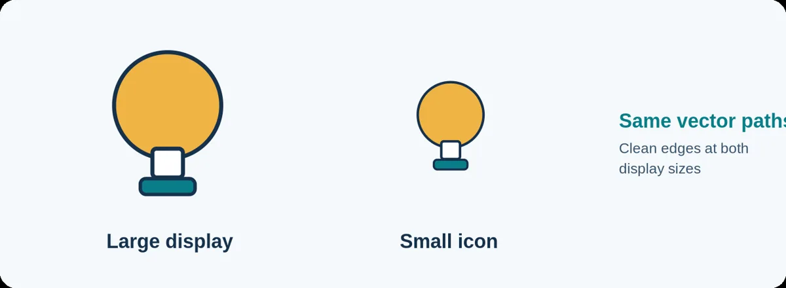
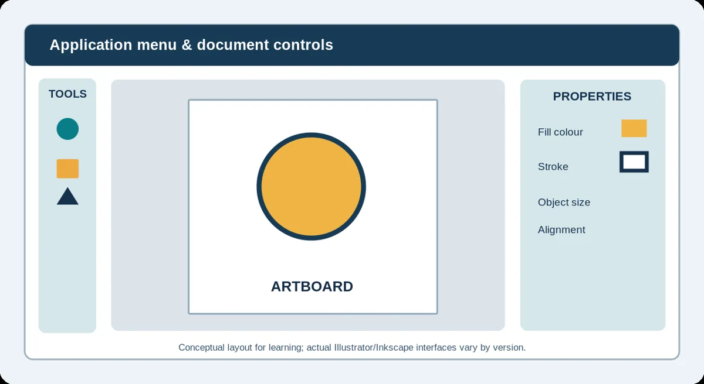
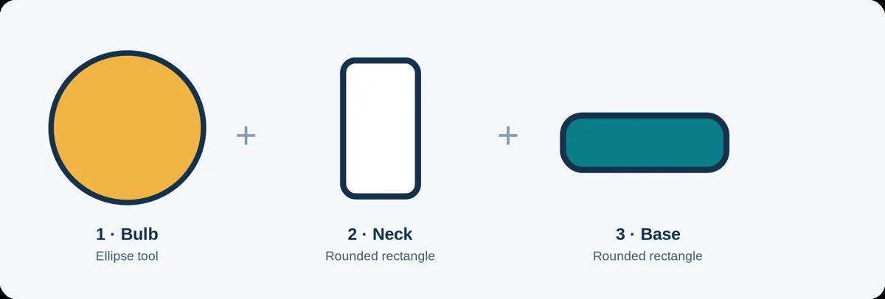
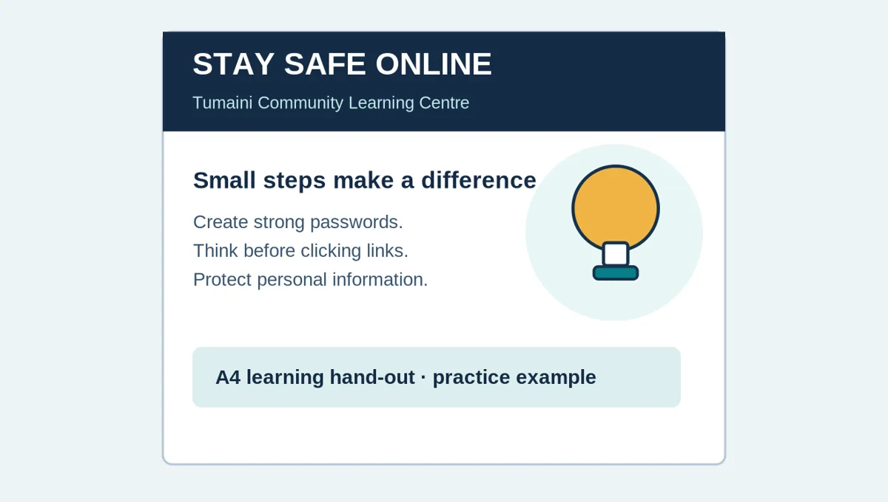

Introduction to Vector Graphics
Draw a simple vector symbol using shapes, fills, strokes and alignment.
Lecture notes
Vector shapes, Illustrator basics, alignment and export
Learning outcomes
After studying this lecture and completing the practical exercise, you should be able to explain the difference between raster and vector graphics, create a simple icon from shapes, adjust fills and strokes, group and align objects, and save an editable vector file with a suitable exported copy.
1. Why vector graphics matter
Not every picture is best represented by pixels. Photographs contain thousands or millions of colour variations and are generally handled as raster images. Simple symbols, diagrams and logos are different: their appearance depends mainly on outlines, shapes and colours. These are natural uses for vector graphics.
A vector graphic is a digital illustration constructed from mathematically described paths and geometric shapes. Its objects can be enlarged or reduced without the blocky edges that may appear when a low-resolution raster image is stretched. However, placing a raster photograph inside a vector file does not turn the photograph into a resolution-independent picture.

Figure 1. The same vector lightbulb shown at different display sizes.
2. Raster and vector graphics compared
| Feature | Raster graphic | Vector graphic |
|---|---|---|
| Building blocks | Pixels arranged in a grid | Paths, lines and shapes |
| Typical use | Photographs and detailed textures | Icons, diagrams and simple logos |
| Scaling | Limited by pixel detail | Paths remain crisp when scaled |
| Common formats | JPEG, PNG, TIFF | SVG, AI; some PDFs contain vectors |
A file extension alone is not enough to prove that every object in a document is vector. A PDF, for example, may contain text, vector shapes and raster images in the same document.
3. Vector-editing software and the workspace
Adobe Illustrator is a professional vector-design application. Inkscape is a free alternative that works with the same underlying ideas. Their menu names and panel positions differ, so this lecture concentrates on transferable skills rather than memorising one interface layout.

Figure 2. A simplified representation of a vector editor, not a version-specific screenshot.
- Artboard: the defined area of the document to be exported or printed.
- Selection tool: selects objects so they can be moved, resized or grouped.
- Shape tools: create basic ellipses, rectangles and other geometric objects.
- Properties and colour controls: change an object’s fill, stroke, size and alignment.
For our exercise, use a square 800 × 800 artboard. These dimensions provide a convenient digital workspace. They do not make the vector paths dependent on a fixed pixel resolution; that matters only when you create a raster export such as PNG.
4. Constructing a simple symbol
The practical example is a learning lightbulb for the fictional Tumaini Community Learning Centre. It is built from just three objects: an ellipse for the bulb, a rounded rectangle for the neck and a wider rounded rectangle for the base. This is enough to learn the main shape tools and create an icon that can be reused in a hand-out.

Figure 3. Each visible part starts as a separate editable shape.
5. Fill, stroke and visual consistency
The fill is the interior colour of a shape, while the stroke is the line around its boundary. For example, the bulb can use a warm gold fill and a dark outline. The base can use teal so the icon relates to the learning-centre materials. Keeping strokes consistent and using only two or three colours creates a tidier visual identity.
As you work, check whether the icon still looks recognisable at a small size. A design containing many tiny decorations may look attractive when enlarged but become difficult to read in a brochure or presentation.
6. Selecting, aligning and grouping objects
The Selection Tool lets you move or resize individual shapes. Maintain the proportions of an object when a change in width or height would distort its meaning. Next, align the three parts along a shared vertical centre. Most vector editors provide horizontal-centre alignment controls. Inspect the result visually, because mathematical alignment is not always the same as perceived balance.
The arrangement order of objects affects which parts appear in front. Adjust overlapping objects until the connections look clean. Once the icon is complete, select all three objects and group them. Grouping allows the design to move as one object while retaining editable components. In many editors the keyboard shortcut for grouping is Ctrl+G.
7. Saving and exporting correctly
Two kinds of file are needed. The first is the editable source: normally an AI document when using Illustrator, or an SVG when working in Inkscape. The source retains the shapes and their properties. The second is a published copy, such as PNG or SVG, that is suitable for another application.
| Format | What it retains | Suitable use |
|---|---|---|
| AI | Native, editable Illustrator document | Further design changes in Illustrator |
| SVG | Vector paths; may remain editable | Scalable icons in compatible software |
| PNG | Raster pixels and optional transparency | Fixed-size graphics for documents and slides |
A PNG image has a particular pixel width and height. It may look sharp at the intended size but become pixelated if enlarged excessively. A properly exported SVG remains vector-based when the destination software supports it. Always reopen saved files to confirm that nothing is missing.
8. A practical workflow you can repeat
- Create a new square document and name it clearly.
- Draw the ellipse, neck and base as three separate shapes.
- Apply simple fills and an appropriately visible stroke.
- Align the shapes, inspect overlaps and group them.
- Save the editable vector source and export a PNG copy.
- Open the saved files again and check appearance and editability.

Figure 4. One possible use for the completed symbol on a student hand-out.
9. Common mistakes and how to avoid them
A stretched bulb can look like an unrelated oval; resize proportionally. Misaligned shapes can make the icon appear unstable; use alignment tools, then check the complete image at normal size. Colours or outlines that are too weak may disappear on a small export; use a restricted palette and a visible stroke. Finally, do not submit only a PNG when the task requires an editable vector source.
10. Review questions
- Explain what makes a graphic a vector graphic. Give one appropriate application.
- Compare raster and vector graphics in terms of construction and resizing.
- What is the difference between the fill and the stroke of a shape?
- Explain why alignment and grouping are useful when constructing a multi-part icon.
- Distinguish an editable AI/SVG source from a PNG export.
- Why should an icon be inspected at both large and small display sizes?
Additional reading
Wood, B. (2025). Adobe Illustrator Classroom in a Book (2025 release). Adobe Press. Relevant introductory chapters may be consulted for additional software practice. The extended Topic 4 materials from this module are also available for independent study.
Simple practical activity
Make an educational icon
Create a lightbulb or open-book icon from three basic vector shapes. Align the shapes, use two colours and save an editable SVG or AI file plus a PNG.
Read the full guided practical instructions
Core exercise · Three shapes · Source plus export
Student practical workbook · Lecture 6
Name: ________________________________________ Registration number: ______________________________
What you will produce
Create a simple lightbulb icon for the Tumaini Community Learning Centre using one ellipse and two rounded rectangles. Your submitted work should contain an editable vector source (.ai or .svg), a PNG export and a short explanation of your design decisions.
You may use Adobe Illustrator or Inkscape. The menu positions may differ, but the practical skills are the same. A printable starter SVG and a model example are provided in the resource folder.
A model for study, not a requirement to copy every colour exactly.
Activity A — Set up and draw
- Create an 800 × 800 square document. Save it in a folder labelled ITT06105_L06.
- Draw an ellipse near the upper centre of the artboard.
- Place a narrow rounded rectangle beneath the bulb and a wider, shorter rectangle beneath it.
- Apply a simple fill colour and a visible stroke to each shape.
Activity B — Refine your artwork
- Use the selection and alignment tools to centre the three parts.
- Adjust their vertical positions until the silhouette resembles a lightbulb.
- Group the three objects and test whether the whole icon moves together.
- Inspect the icon at a smaller display size and remove unnecessary decoration.
Activity C — Save and export
- Save an editable vector source as Tumaini_Icon_YourID.ai or Tumaini_Icon_YourID.svg.
- Export a transparent-background PNG named Tumaini_Icon_YourID.png if your editor supports it.
- Open the exported PNG to confirm that no part is missing or cropped.
- Reopen the vector source and change one colour temporarily to demonstrate editability; undo or restore the intended colour.
Submission checklist
☐ Editable source file saved
☐ PNG exported and checked
☐ Three shapes aligned and grouped
☐ Icon recognisable at small size
☐ Two or three sentences explaining design decisions
Short reflection
1. Why did you choose your fill and outline colours?
________________________________________________________________________________
________________________________________________________________________________
2. Which adjustment most improved the appearance of your icon?
________________________________________________________________________________
________________________________________________________________________________
If a computer is not available
Sketch the three shapes on paper, indicate the intended fill and stroke colours, and label how you would align and group them. Complete the source-file and export stages when you gain access to a computer.
Basic software controls
| Action | Illustrator | Inkscape |
|---|---|---|
| Choose ellipse | Ellipse Tool (L) | Ellipse Tool (E) |
| Choose rectangle | Rectangle Tool (M) | Rectangle Tool (R / F4) |
| Group selection | Object > Group (Ctrl+G) | Object > Group (Ctrl+G) |
| Export PNG | File > Export > Export As | File > Export |
Review questions
Try explaining each answer in your own words before using the quiz.
- Explain why vector artwork remains useful at different sizes.
- Distinguish fill from stroke.
- Why is grouping useful when making a small icon?